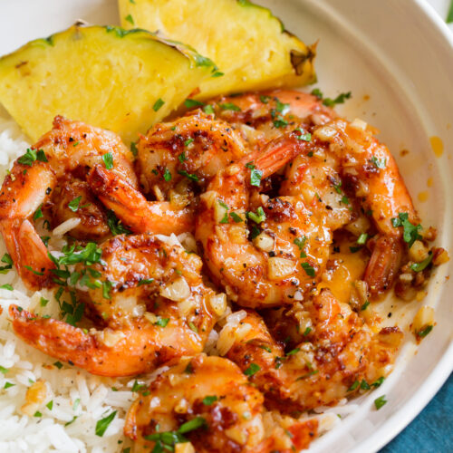

Garlic Schrimp

Description
Delicious crispy shrimp coated in a bread crumb-Parmesan mixture. My
family can't get enough of it! I would suggest doubling the recipe if you
have very large eaters because this is addictive! Serve with pasta and
salad.
Ingredients
- 1 cup dry bread crumbs
- 1 cup shredded Parmesan cheese
Directions
-
Preheat the oven to 350 degrees F (175 degrees C). Spray a 9x13-inch
glass casserole dish with nonstick cooking spray.
-
Combine bread crumbs, Parmesan cheese, parsley, and garlic powder in a
large resealable plastic bag. Seal and shake to mix ingredients
together. Add shrimp and shake to coat.